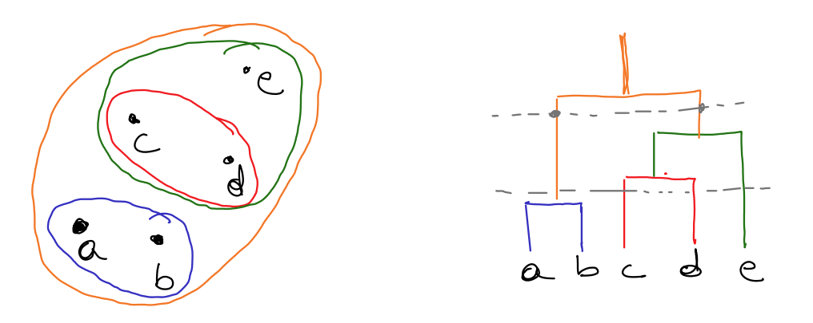
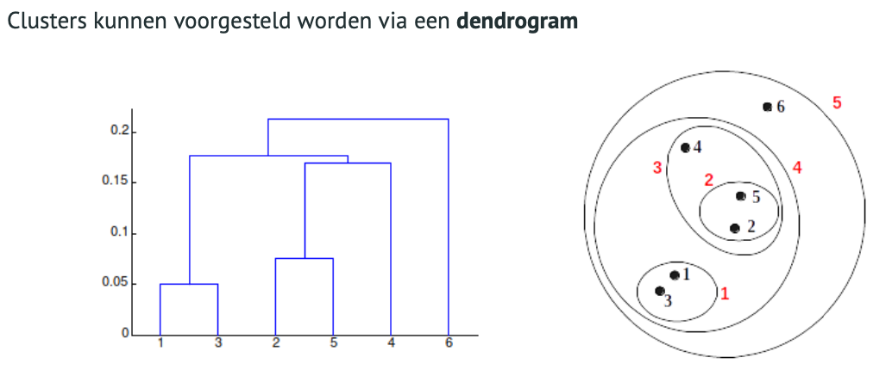
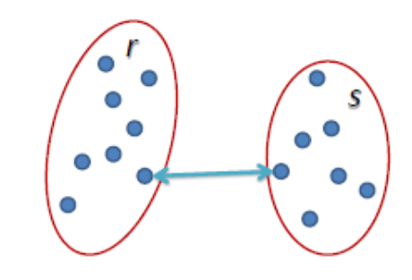

Hierarchical clustering
voor het vinden van de clusters :
neem de 2 punten die het dichtst bij elkaar liggen tot een cluster (deze cluster is opnieuw een datapunt), neem dan de volgende twee datapunten en ga zo door tot je 1 cluster overhoud op hierarchisch het hoogste niveau.



Sterktes van hierarchical clustering:
- Geen vooropgesteld aantal clusters nodig. Elk gewenst aantal clusters kan bekomen worden door het dendrogram op de juiste plaats af te snijden.
- De structuur van het dendrogram kan nuttig zijn. Bijvoorbeeld in biologie, productcategorieën.
Hoe bepaal je de afstand tss twee clusters ?
Bepalen van de afstand tussen twee clusters :
single linkage
kleinste verschil zoeken

$$L(r,s)=min(D(x_{ri},x_{sj}))$$
complete linkage
grootste verschil zoeken

$$L(r,s)=max(D(x_{ri},x_{sj}))$$
average linkage
alle afstanden van alle punten en daar het gemiddelde van nemen >>> Rekenintensief !!
Minder gevoelig voor uitschieters maar wel een voorkeur voor globale clusters

$$L(r,s)=\dfrac{1}{n_r n_s}\sum^{n_r}_{i=1}\sum^{n_s}_{i=1}D(x_{ri},x_{sj}))$$
Bruikbaarheid hierarchische clustering
Complexiteit van hierarchical clustering
Zeer rekenintensief:
- Het aantal berekeningen is minstens kwadratisch afhankelijk van het aantal datapunten.
- Niet bruikbaar voor grote datasets.
Goed voor kleine datasets om inzicht te krijgen maar niet bruikbaar voor grotere datasets (big data).